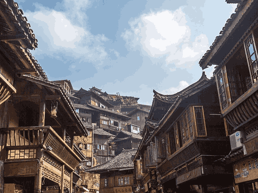

山地民族的建筑智慧
在
中国西南的崇山峻岭之间，苗族和壮族人民创造了独特的木构建筑体系——吊脚楼与干栏式建筑。它们依山就势，悬空而建，不用一钉一铆，却能在陡峭的山坡上屹立数百年。
这种"借天不借地"的建筑哲学，不仅保护了珍贵的耕地资源，更体现了少数民族对自然环境的深刻理解和尊重。木柱支撑起生活的空间，榫卯连接着世代相传的智慧。
根据山坡地形灵活调整柱高，无需平整土地，最大程度保护自然环境。
不用一钉一铆，全靠木材之间的凹凸结合，抗震性能极佳，可拆卸重建。
三层布局：底层饲养、中层居住、顶层储物，功能分区明确合理。
架空设计利于空气流通，避免地面湿气，适应南方潮湿气候。
建筑背后的精神世界
对于苗族和壮族人民而言，房屋不仅是遮风避雨的居所，更是家族记忆和文化传承的载体。
中柱崇拜：房屋的中柱被视为"生命之柱"，立柱时要举行隆重的仪式，祈求祖先保佑。
火塘文化：堂屋中央的火塘是家庭的核心，家人围坐火塘边吃饭、聊天、传授技艺，维系着家族的凝聚力。
美人靠：吊脚楼前廊的"美人靠"栏杆，是姑娘们刺绣、对歌、眺望远方的地方，承载着无数浪漫的故事。
